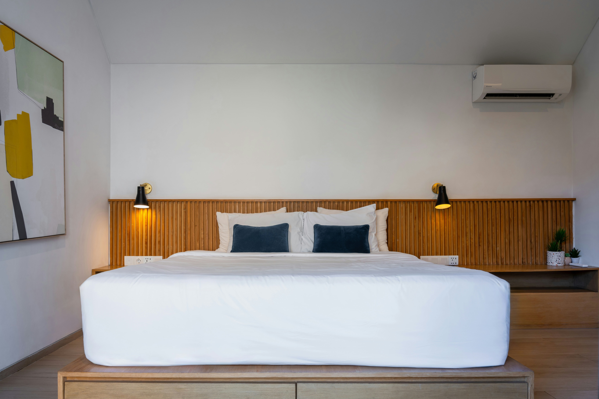
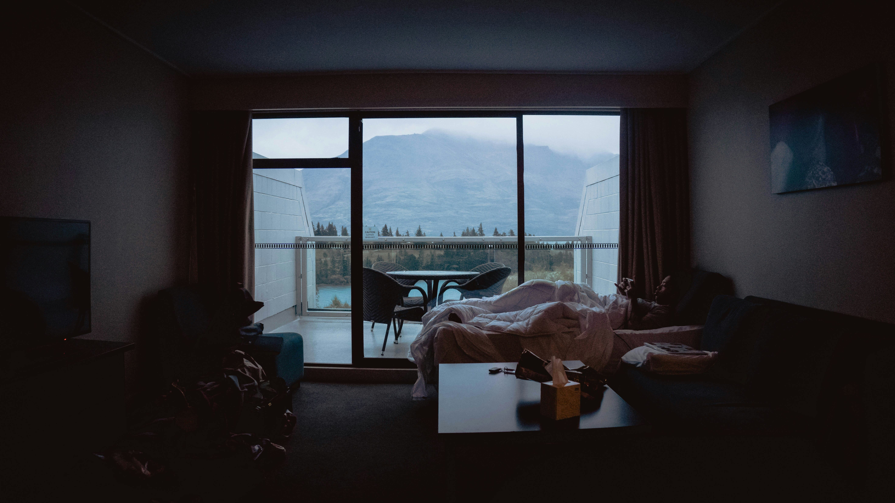
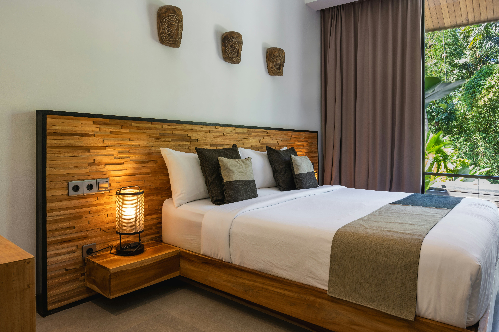
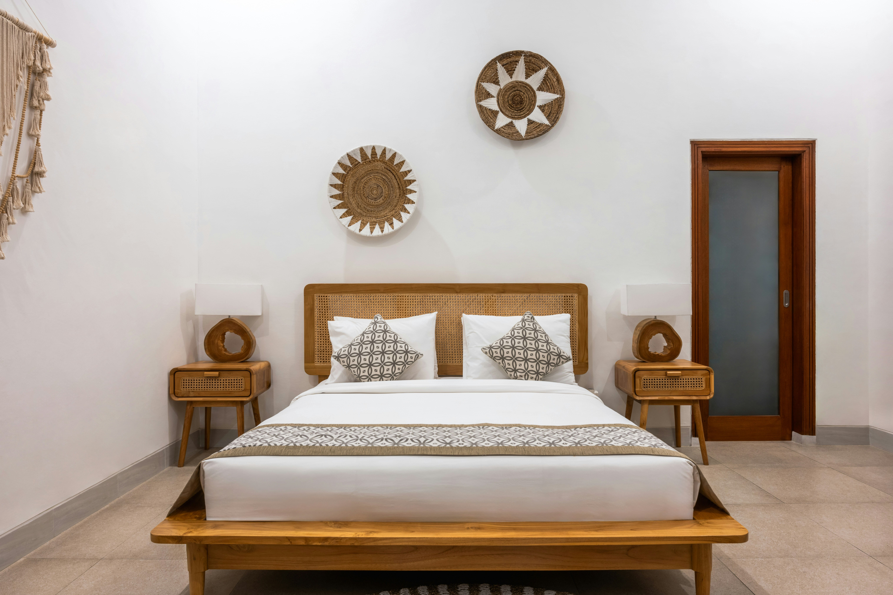
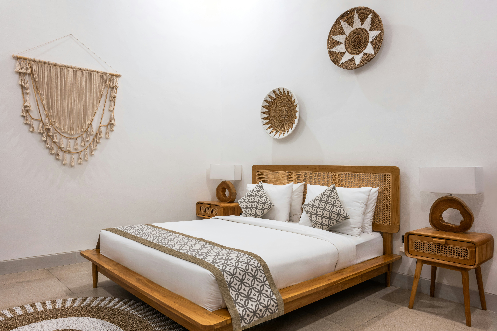
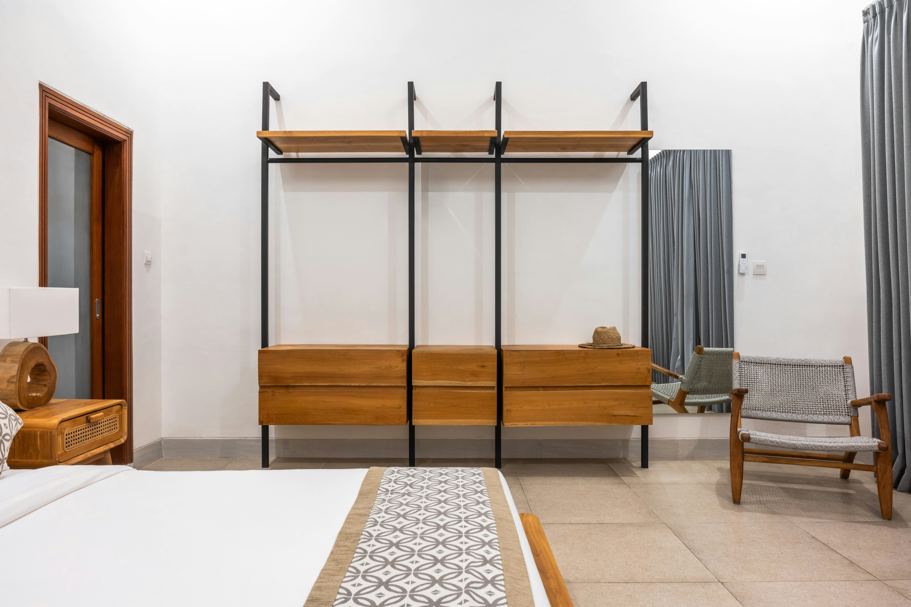

"Temukan kamar impian Anda di KostIn! Pilihan terbaik dengan harga
bersaing, hanya untuk Anda. Mulai pencarian sekarang dan rasakan
kenyamanannya!"
Kamar 101

Kamar 101 - Kamar Nyaman untuk Anda
Kamar 101 adalah pilihan ideal bagi Anda yang mencari kenyamanan dan
privasi. Dengan desain modern dan fasilitas lengkap, kamar ini
menawarkan tempat tidur yang nyaman, meja kerja, dan koneksi Wi-Fi
cepat. Dilengkapi dengan jendela besar yang memandang ke pemandangan
luar, Anda dapat menikmati suasana yang tenang setelah hari yang
sibuk. Nikmati pengalaman menginap yang menyenangkan dengan akses
mudah ke fasilitas umum dan lingkungan yang aman. Kamar ini cocok
untuk pekerja profesional atau pelancong yang menghargai kenyamanan
dan efisiensi
Kamar 102

Kamar 102 - Kenyamanan yang Sempurna
Kamar 102 dirancang untuk memberikan pengalaman menginap yang luar
biasa. Dengan desain minimalis dan fasilitas modern, kamar ini
menawarkan tempat tidur king-size yang nyaman, meja kerja, dan akses
Wi-Fi cepat. Jendela besar menyediakan pencahayaan alami dan
pemandangan luar yang menenangkan. Dilengkapi dengan TV layar datar
dan mini kulkas, kamar ini adalah pilihan ideal untuk pelancong
bisnis atau wisatawan yang mencari kenyamanan tambahan selama masa
inap mereka. Rasakan kenyamanan dan kepraktisan yang ditawarkan oleh
Kamar 102.
Kamar 103

Kamar 103 - Ruang Luas dan Menyegarkan
Kamar 103 menawarkan ruang yang luas dengan desain yang segar dan
modern. Dilengkapi dengan tempat tidur double yang nyaman dan
fasilitas lengkap seperti TV, meja kerja, dan Wi-Fi gratis, kamar
ini menyediakan semua yang Anda butuhkan untuk masa inap yang
menyenangkan. Pencahayaan alami dari jendela besar menciptakan
suasana yang terang dan menyegarkan. Kamar ini juga memiliki area
duduk tambahan, ideal untuk bersantai setelah hari yang panjang.
Nikmati kenyamanan dan ruang tambahan di Kamar 103.
Kamar 104 (Paket Spesial)

Kamar 104 - Elegan dan Fungsional
Kamar 104 adalah pilihan tepat bagi Anda yang menginginkan gabungan
antara keanggunan dan fungsionalitas. Dengan dekorasi yang elegan
dan fasilitas modern, kamar ini menawarkan tempat tidur nyaman, meja
kerja, dan TV layar datar. Pencahayaan yang lembut dan warna-warna
netral menciptakan suasana yang tenang dan menenangkan. Kamar ini
juga dilengkapi dengan mini kulkas dan mesin pembuat kopi untuk
kenyamanan tambahan. Baik untuk kunjungan singkat atau tinggal lebih
lama, Kamar 104 memberikan pengalaman menginap yang memuaskan.
- Tampak Samping

Kamar 104 adalah pilihan tepat bagi Anda yang menginginkan
gabungan antara keanggunan dan fungsionalitas. Dengan dekorasi
yang elegan dan fasilitas modern, kamar ini menawarkan tempat
tidur nyaman, meja kerja, dan TV layar datar. Pencahayaan yang
lembut dan warna-warna netral menciptakan suasana yang tenang dan
menenangkan. Kamar ini juga dilengkapi dengan mini kulkas dan
mesin pembuat kopi untuk kenyamanan tambahan. Baik untuk kunjungan
singkat atau tinggal lebih lama, Kamar 104 memberikan pengalaman
menginap yang memuaskan.
Kamar 105

Kamar 105 - Ruang Santai dan Menenangkan
Kamar 105 dirancang untuk memberikan rasa santai dan relaksasi.
Dengan interior yang elegan dan suasana yang menenangkan, kamar ini
dilengkapi dengan fasilitas modern seperti TV layar datar, mini
kulkas, dan mesin pembuat kopi. Dinding yang tertutup oleh dekorasi
yang menyegarkan menambah kesan nyaman, sementara pencahayaan lembut
menciptakan suasana yang hangat dan mengundang. Baik untuk kunjungan
singkat atau masa inap yang lebih lama, Kamar 105 menawarkan
kenyamanan yang membuat Anda merasa seperti di rumah sendiri.